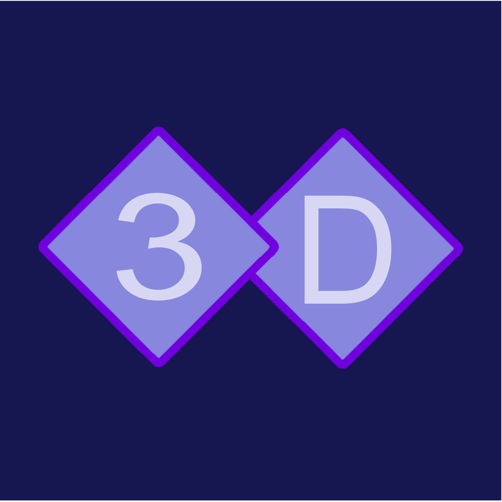

My specialty is in simple and elegant 3d/2d logo design. I am able to creat these designs and add a 3d layer to them to give them more dimensionality on your own website and usability outside of simple print.
2D logo designs are quite simple to creat depending on the requirements of the design. My specialty is in taking a 2D design and transforming it in 3D. This does require a good line of communication between clients to make sure I am extracting the correct shapes from the original design, but can be vary useful when adding this design to 3 dimensional objects or adding extra value to your own logos.